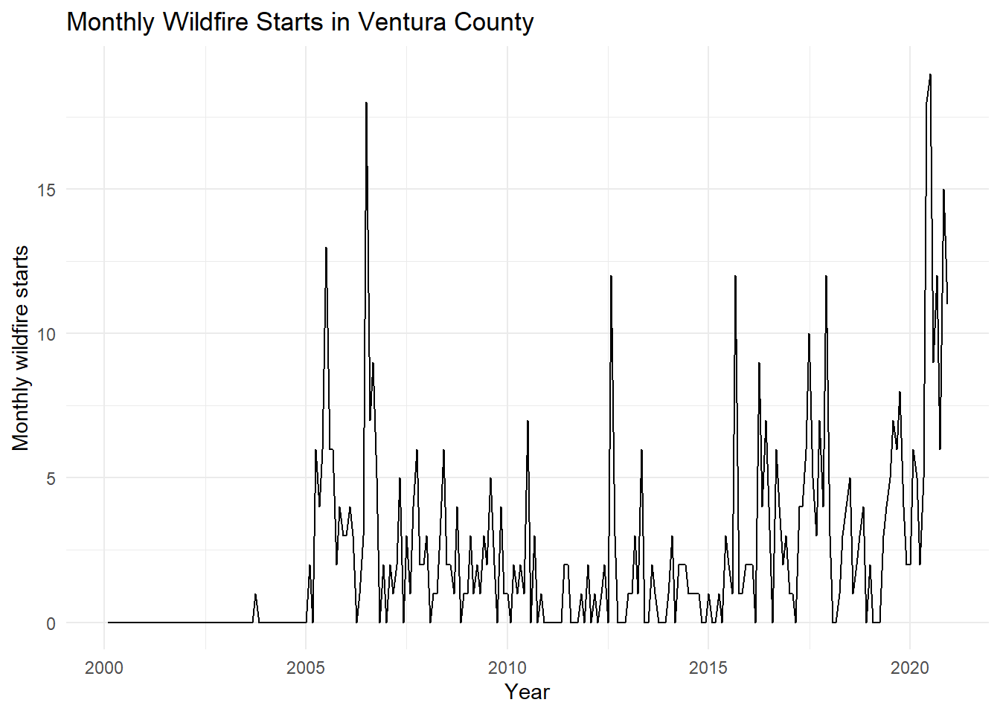
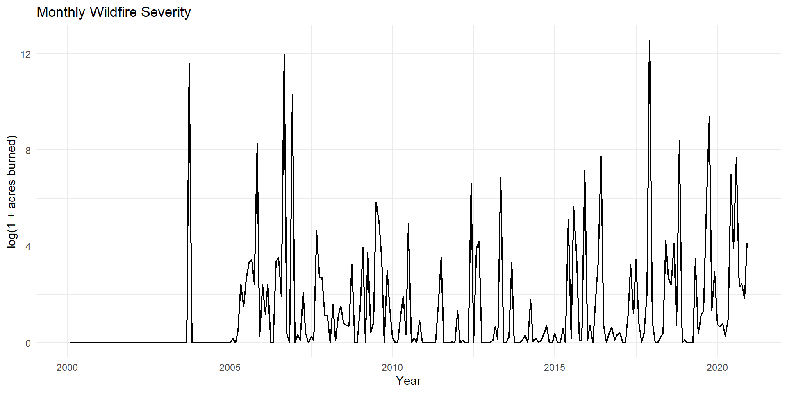
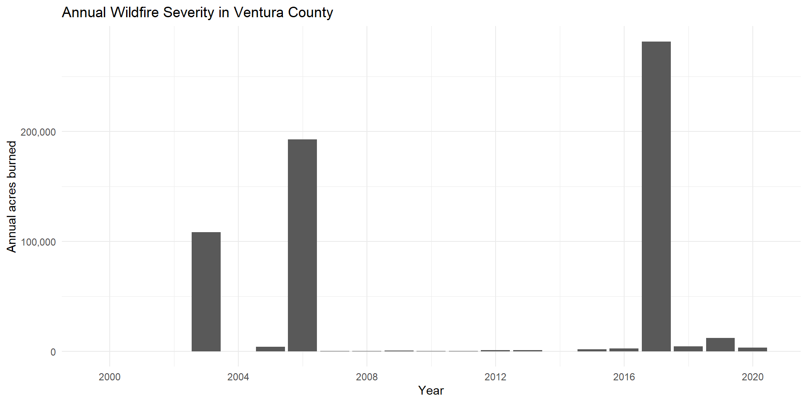

Time Series Analysis of Ventura County Wildfires
Modeling Wildfire Starts and Severity with SARIMA and ARMAX
This project analyzes monthly wildfire activity in Ventura County, California, from February 2000 through December 2020.
I modeled wildfire starts and wildfire severity separately because a month with many fires does not necessarily have the most acres burned.
Project Overview
Research Question
Can monthly wildfire starts be modeled using seasonal time-series methods, and can environmental conditions improve the modeling of wildfire severity?
Data
The analysis combines monthly Ventura County wildfire records with drought, weather, Santa Ana-like wind, and NDVI vegetation data.
The study period includes 251 monthly observations from February 2000 through December 2020. The year 2000 is partial because the sample begins in February.
Tools Used
- R
- tidyverse
- ggplot2
- SARIMA
- ARMAX
- Time-series diagnostics
- Environmental feature engineering
Main Findings
- Monthly wildfire starts were modeled with ARIMA(0,1,3)(0,0,1)[12] after applying
log(1 + fire_count). - The wildfire-start model had a Ljung-Box p-value of 0.1224, suggesting no strong remaining autocorrelation.
- Monthly acres burned were modeled using an ARMAX model with lagged severe drought, Santa Ana-like wind conditions, and NDVI vegetation greenness.
- The final ARMAX model used ARIMA(1,0,1) errors.
- The ARMAX model improved on the baseline SARIMA model for acres burned.
| Model | AICc | BIC | Ljung-Box p-value |
|---|---|---|---|
| SARIMA for wildfire starts | 467.92 | 485.28 | 0.1224 |
| Baseline SARIMA for acres burned | 1094.54 | 1101.48 | — |
| ARMAX for acres burned | 1065.62 | 1089.66 | 0.8344 |
Modeling Approach
Wildfire Starts
The wildfire-start model used monthly fire counts as the outcome. Because many months had zero fires and a few had much larger counts, I modeled:
log(1 + fire_count)
The final model was:
ARIMA(0,1,3)(0,0,1)[12]
Wildfire Severity
Wildfire severity was measured using total monthly acres burned. Since a small number of extreme wildfire months can dominate the original scale, I modeled:
log(1 + total_acres_burned)
The final ARMAX model included:
D2_lag3: severe drought conditions lagged three monthssanta_ana_flag: a Santa Ana-like wind indicatormean_ndvi: vegetation greenness
Key Visuals
Monthly Wildfire Starts
Monthly Wildfire Severity

Annual Acres Burned

Interpretation
The results show why wildfire starts and acres burned should be treated as separate outcomes.
Monthly fire counts could be modeled reasonably well using a seasonal ARIMA model. Acres burned benefited from environmental predictors because wildfire severity is affected by drought, wind, and vegetation conditions in addition to past wildfire activity.
The ARMAX model improved AICc and BIC compared with the baseline time-series-only model for acres burned.
Limitations and Future Work
This analysis uses county-level monthly totals, so it cannot fully capture local variation in weather, fuels, terrain, ignition sources, and fire-suppression response.
Future work could include more detailed wind data, direct fuel-moisture measurements, spatial wildfire modeling within Ventura County, and out-of-sample forecast evaluation.
Reproducibility
The full report includes the data preparation process, model selection, diagnostic plots, forecast results, and appendix code.
Data sources include the USDA Forest Service Fire Program Analysis Fire-Occurrence Database, NOAA drought data, NASA POWER weather data, and MODIS NDVI vegetation data.